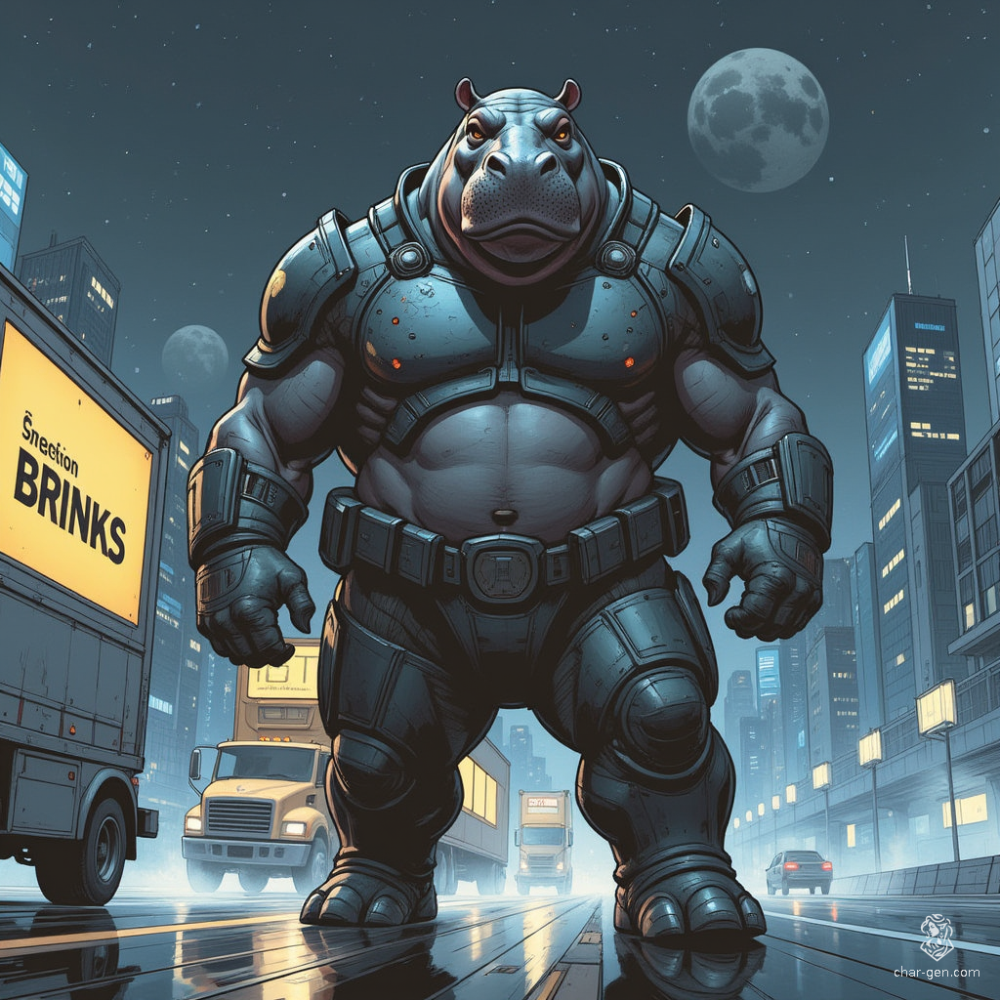

Hippomungus: The River's Wrath

Early Life Born in the wild, Hippomungus spent his early years like any other hippo, roaming the river and grazing on riverbank vegetation. His habitat was slowly being overtaken by industrial waste and urban sprawl—a grim backdrop that would set the stage for an extraordinary transformation.
The Turning Point One fateful night, a covert chemical spill occurred from a nearby clandestine industrial facility. The spill wasn't just ordinary waste—it was laced with experimental mutagens being tested for purposes never meant for public knowledge. The contaminated water and soil seeped into the river, bathing young Hippomungus in potent chemicals.
Over the following weeks, he underwent dramatic physical changes. His size increased dramatically, his muscles became denser, and his skin thickened into a near-impenetrable hide. But the transformation wasn't merely physical—it reached deep into his mind, awakening something unprecedented.
Awakening of Sentience The mutagens didn't only alter his body—they affected his brain. Once a simple, instinct-driven animal, he began to develop an awareness that set him apart from his kin. In a rare moment of clarity amid the chaos of his transformation, Hippomungus realized he could think, plan, and act with purpose.
This newfound sentience came with a price: a brutal, unyielding temper that would later manifest as his berserker nature. The cognitive leap from simple hippopotamus to sentient being brought with it a complexity of emotions and thoughts he was never meant to possess.
Rise in the Underworld Displaced from his natural habitat, the young mutated hippo was captured by local criminals. They saw not a wild animal, but a powerful tool for their operations. With a mix of training and raw street survival, he quickly adapted to his new role. His natural strength, enhanced by his mutation, made him an invaluable enforcer.
Embracing his transformation, he adopted the moniker "Hippomungus"—a name that struck fear into the hearts of those who crossed his path. His reputation grew in the criminal underworld as a force of nature, an unstoppable juggernaut when his berserker rage took hold.
Legacy of Power Today, Hippomungus stands as a testament to how extreme circumstances can forge unlikely legends. With a healing factor, berserker fury, and a suite of devastating combat abilities, he serves as the brutal muscle for a criminal network—one whose savage strength and unpredictable nature make him both a powerful ally and a dangerous adversary.
Despite his fearsome reputation, traces of his original nature remain. Like his unchanged kin, he still seeks out water bodies, though now he uses them strategically in urban warfare. His territory is no longer a simple riverbank but the sprawling concrete jungle of the city's underworld.
As Hippomungus continues to evolve in his role, one thing remains clear: he represents a unique fusion of primal force and calculated intelligence, a combination that makes him one of the most formidable figures in the criminal landscape. His story serves as a dark reminder of how human interference with nature can create forces beyond control.